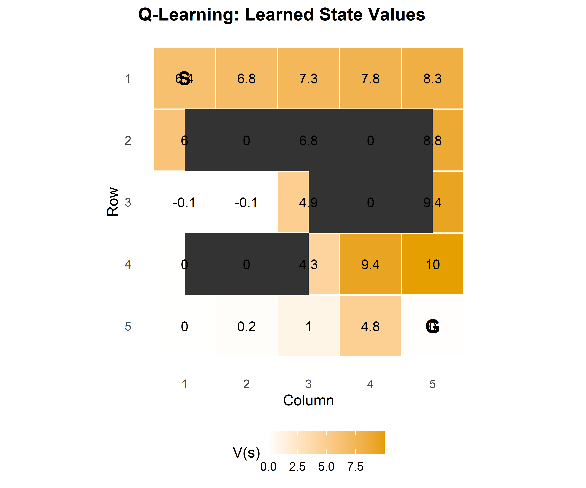
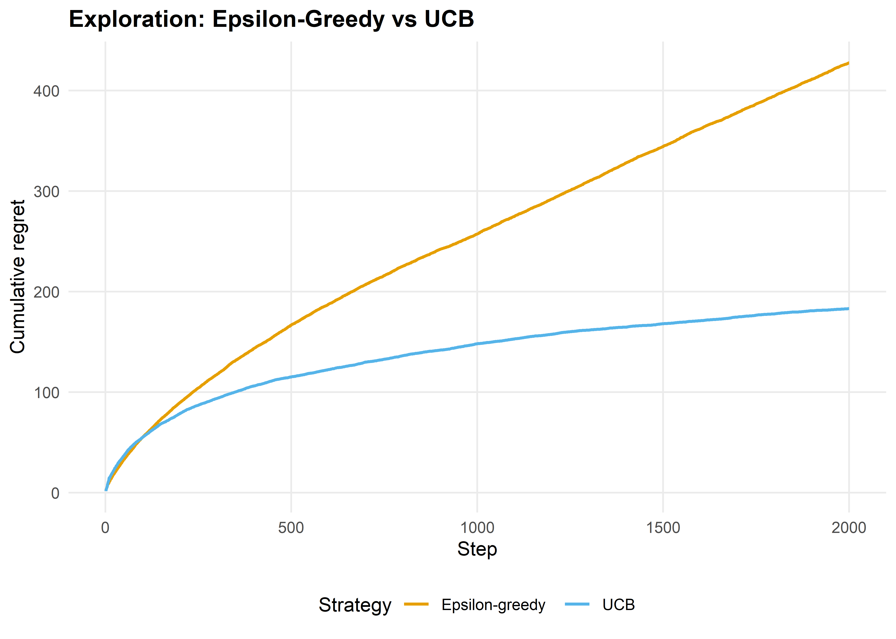

create_gridworld <- function(rows = 5, cols = 5, obstacles = NULL,
goal = NULL, goal_reward = 10, step_cost = -0.1) {
if (is.null(goal)) goal <- c(rows, cols)
# State encoding: (row, col) -> integer id
state_id <- function(r, c) (r - 1) * cols + c
id_to_rc <- function(id) c((id - 1) %/% cols + 1, (id - 1) %% cols + 1)
is_obstacle <- function(r, c) {
if (is.null(obstacles)) return(FALSE)
any(obstacles[, 1] == r & obstacles[, 2] == c)
}
# Actions: 1=up, 2=right, 3=down, 4=left
action_delta <- list(c(-1, 0), c(0, 1), c(1, 0), c(0, -1))
action_names <- c("Up", "Right", "Down", "Left")
step <- function(state, action) {
rc <- id_to_rc(state)
delta <- action_delta[[action]]
nr <- rc[1] + delta[1]
nc <- rc[2] + delta[2]
# Stay in place if hitting wall or obstacle
if (nr < 1 || nr > rows || nc < 1 || nc > cols || is_obstacle(nr, nc)) {
return(list(next_state = state, reward = step_cost, done = FALSE))
}
next_state <- state_id(nr, nc)
done <- (nr == goal[1] && nc == goal[2])
reward <- if (done) goal_reward else step_cost
list(next_state = next_state, reward = reward, done = done)
}
list(
rows = rows, cols = cols, n_states = rows * cols, n_actions = 4,
start = state_id(1, 1), goal = state_id(goal[1], goal[2]),
step = step, state_id = state_id, id_to_rc = id_to_rc,
action_names = action_names, obstacles = obstacles
)
}26 Reinforcement Learning Foundations
Abstract
Markov decision processes, the Bellman equation, tabular Q-learning and SARSA from scratch, and the exploration-exploitation trade-off via epsilon-greedy and UCB.
Keywords
reinforcement learning, MDP, Q-learning, SARSA, exploration, UCB
27 Reinforcement Learning Foundations
Learning objectives
- Define a Markov decision process (MDP) and derive the Bellman optimality equation.
- Implement tabular Q-learning from scratch for a gridworld environment.
- Compare Q-learning (off-policy) and SARSA (on-policy) in terms of learned policies.
- Analyze exploration strategies: \(\varepsilon\)-greedy versus upper confidence bound (UCB).
27.1 Motivation
An agent navigates a maze, choosing directions and receiving rewards, with no prior knowledge of the map. This is the reinforcement learning (RL) problem (Sutton & Barto, 2018). Unlike supervised learning (correct answers provided) or game theory’s analytical equilibria, RL learns through trial-and-error interaction. The framework is foundational for multi-agent learning: before understanding how two Q-learners interact in a matrix game (Chapter 28), we must understand single-agent Q-learning.
27.2 Theory
27.2.1 Markov decision processes
A Markov decision process (MDP) is a tuple \((\mathcal{S}, \mathcal{A}, P, R, \gamma)\) where:
- \(\mathcal{S}\) is a finite set of states,
- \(\mathcal{A}\) is a finite set of actions,
- \(P(s' \mid s, a)\) is the transition probability,
- \(R(s, a, s')\) is the reward function,
- \(\gamma \in [0, 1)\) is the discount factor.
The agent’s goal is to find a policy \(\pi(a \mid s)\) that maximizes expected cumulative discounted reward:
\[ V^\pi(s) = \mathbb{E}_\pi \left[ \sum_{t=0}^{\infty} \gamma^t R_t \;\middle|\; S_0 = s \right] \tag{27.1}\]
27.2.2 The Bellman equation
The optimal value function \(V^*(s)\) satisfies the Bellman optimality equation:
\[ V^*(s) = \max_{a \in \mathcal{A}} \sum_{s'} P(s' \mid s, a) \left[ R(s, a, s') + \gamma \, V^*(s') \right] \tag{27.2}\]
Equivalently, the optimal action-value function \(Q^*(s, a)\) satisfies:
\[ Q^*(s, a) = \sum_{s'} P(s' \mid s, a) \left[ R(s, a, s') + \gamma \max_{a'} Q^*(s', a') \right] \tag{27.3}\]
27.2.3 Tabular Q-learning
Q-learning (Watkins & Dayan, 1992) is a model-free, off-policy algorithm. After taking action \(a\) in state \(s\), observing reward \(r\) and next state \(s'\):
\[ Q(s, a) \leftarrow Q(s, a) + \alpha \left[ r + \gamma \max_{a'} Q(s', a') - Q(s, a) \right] \tag{27.4}\]
The \(\max\) operator makes it off-policy: Q-learning updates toward the best possible next action regardless of what was actually taken. Under standard conditions, \(Q \to Q^*\).
27.2.4 SARSA
SARSA (State-Action-Reward-State-Action) is an on-policy alternative that bootstraps from the action \(a'\) actually chosen, rather than the greedy \(\max\):
\[ Q(s, a) \leftarrow Q(s, a) + \alpha \left[ r + \gamma \, Q(s', a') - Q(s, a) \right] \tag{27.5}\]
SARSA learns the value of the policy it follows (including exploration), making it more conservative near dangerous states.
27.2.5 Exploration vs exploitation
The agent must balance exploitation (best-known action) with exploration (trying alternatives). Two standard strategies: \(\varepsilon\)-greedy (random action with probability \(\varepsilon\), greedy otherwise) and UCB (choose \(a = \arg\max_a [ Q(s,a) + c \sqrt{\ln t / N(s,a)} ]\), exploring in proportion to uncertainty).
27.3 Implementation in R
27.3.1 Gridworld environment
27.3.2 Tabular Q-learning agent
q_learning_gridworld <- function(env, episodes = 1000,
alpha = 0.1, gamma = 0.95,
epsilon = 0.1, max_steps = 200) {
Q <- matrix(0, nrow = env$n_states, ncol = env$n_actions)
episode_rewards <- numeric(episodes)
for (ep in seq_len(episodes)) {
state <- env$start
total_reward <- 0
for (step in seq_len(max_steps)) {
# Epsilon-greedy action selection
if (runif(1) < epsilon) {
action <- sample(env$n_actions, 1)
} else {
ties <- which(Q[state, ] == max(Q[state, ]))
action <- sample(ties, 1)
}
result <- env$step(state, action)
# Q-learning update (off-policy: uses max over next actions)
best_next <- max(Q[result$next_state, ])
Q[state, action] <- Q[state, action] +
alpha * (result$reward + gamma * best_next - Q[state, action])
total_reward <- total_reward + result$reward
state <- result$next_state
if (result$done) break
}
episode_rewards[ep] <- total_reward
}
list(Q = Q, rewards = episode_rewards)
}27.3.3 SARSA agent
sarsa_gridworld <- function(env, episodes = 1000,
alpha = 0.1, gamma = 0.95,
epsilon = 0.1, max_steps = 200) {
Q <- matrix(0, nrow = env$n_states, ncol = env$n_actions)
episode_rewards <- numeric(episodes)
choose_action <- function(state) {
if (runif(1) < epsilon) {
sample(env$n_actions, 1)
} else {
ties <- which(Q[state, ] == max(Q[state, ]))
sample(ties, 1)
}
}
for (ep in seq_len(episodes)) {
state <- env$start
action <- choose_action(state)
total_reward <- 0
for (step in seq_len(max_steps)) {
result <- env$step(state, action)
next_action <- choose_action(result$next_state)
# SARSA update (on-policy: uses actual next action)
Q[state, action] <- Q[state, action] +
alpha * (result$reward + gamma * Q[result$next_state, next_action] -
Q[state, action])
total_reward <- total_reward + result$reward
state <- result$next_state
action <- next_action
if (result$done) break
}
episode_rewards[ep] <- total_reward
}
list(Q = Q, rewards = episode_rewards)
}27.3.4 Training on the gridworld
obstacles <- matrix(c(2, 2, 3, 4, 4, 2, 2, 4), ncol = 2, byrow = TRUE)
env <- create_gridworld(rows = 5, cols = 5, obstacles = obstacles)
set.seed(42)
ql_result <- q_learning_gridworld(env, episodes = 2000,
alpha = 0.15, gamma = 0.95, epsilon = 0.1)
set.seed(42)
sarsa_result <- sarsa_gridworld(env, episodes = 2000,
alpha = 0.15, gamma = 0.95, epsilon = 0.1)# Extract max Q-value per state as value function
V <- apply(ql_result$Q, 1, max)
grid_df <- tibble(
state = seq_len(env$n_states),
row = (state - 1) %/% env$cols + 1,
col = (state - 1) %% env$cols + 1,
value = V
)
# Mark obstacles
obs_df <- tibble(
row = obstacles[, 1],
col = obstacles[, 2]
)
p_heatmap <- ggplot(grid_df, aes(x = col, y = row, fill = value)) +
geom_tile(colour = "white", linewidth = 0.5) +
geom_tile(data = obs_df, aes(x = col, y = row),
fill = "grey20", inherit.aes = FALSE) +
geom_text(aes(label = round(value, 1)), colour = "black", size = 3.5) +
annotate("text", x = 1, y = 1, label = "S", fontface = "bold", size = 5) +
annotate("text", x = 5, y = 5, label = "G", fontface = "bold", size = 5) +
scale_fill_gradient(low = "white", high = okabe_ito[1], name = "V(s)") +
scale_y_reverse() +
coord_equal() +
theme_publication() +
theme(panel.grid = element_blank()) +
labs(title = "Q-Learning: Learned State Values",
x = "Column", y = "Row")
p_heatmap
save_pub_fig(p_heatmap, "q-learning-gridworld-heatmap", width = 6, height = 5)
27.3.5 Exploration comparison: epsilon-greedy vs UCB
run_bandit <- function(strategy, n_arms = 10, n_steps = 2000,
epsilon = 0.1, ucb_c = 2) {
true_values <- rnorm(n_arms); Q <- rep(0, n_arms); N <- rep(0, n_arms)
cum_regret <- numeric(n_steps); optimal <- max(true_values); tot <- 0
for (t in seq_len(n_steps)) {
action <- if (strategy == "epsilon_greedy") {
if (runif(1) < epsilon) sample(n_arms, 1) else which.max(Q)
} else {
if (any(N == 0)) which(N == 0)[1]
else which.max(Q + ucb_c * sqrt(log(t) / N))
}
reward <- rnorm(1, mean = true_values[action])
N[action] <- N[action] + 1
Q[action] <- Q[action] + (reward - Q[action]) / N[action]
tot <- tot + (optimal - true_values[action]); cum_regret[t] <- tot
}
cum_regret
}
set.seed(42); n_runs <- 50; n_steps <- 2000
eg_regret <- matrix(0, n_runs, n_steps); ucb_regret <- matrix(0, n_runs, n_steps)
for (i in seq_len(n_runs)) {
eg_regret[i, ] <- run_bandit("epsilon_greedy", n_steps = n_steps)
ucb_regret[i, ] <- run_bandit("ucb", n_steps = n_steps)
}
regret_df <- tibble(
step = rep(1:n_steps, 2),
regret = c(colMeans(eg_regret), colMeans(ucb_regret)),
strategy = rep(c("Epsilon-greedy", "UCB"), each = n_steps)
)
p_explore <- ggplot(regret_df, aes(x = step, y = regret, colour = strategy)) +
geom_line(linewidth = 0.8) +
scale_colour_manual(values = c("Epsilon-greedy" = okabe_ito[1],
"UCB" = okabe_ito[2])) +
theme_publication() +
labs(title = "Exploration: Epsilon-Greedy vs UCB",
x = "Step", y = "Cumulative regret", colour = "Strategy")
p_explore
save_pub_fig(p_explore, "exploration-eg-vs-ucb", width = 7, height = 5)
27.4 Worked example
We trace the learning process on the 5x5 gridworld with obstacles at (2,2), (3,4), (4,2), and (2,4). The agent starts at (1,1) and must reach the goal at (5,5).
cat("Q-Learning — Mean reward (last 200 episodes):",
round(mean(tail(ql_result$rewards, 200)), 2), "\n")#> Q-Learning — Mean reward (last 200 episodes): 6.26cat("SARSA — Mean reward (last 200 episodes):",
round(mean(tail(sarsa_result$rewards, 200)), 2), "\n")#> SARSA — Mean reward (last 200 episodes): 6.28# Extract and display the learned policy
policy <- apply(ql_result$Q, 1, which.max)
arrows <- c("Up", "Rt", "Dn", "Lt")
obs_states <- env$state_id(obstacles[,1], obstacles[,2])
policy_matrix <- matrix("", nrow = env$rows, ncol = env$cols)
for (s in seq_len(env$n_states)) {
r <- (s - 1) %/% env$cols + 1
cc <- (s - 1) %% env$cols + 1
if (s %in% obs_states) {
policy_matrix[r, cc] <- " X "
} else if (s == env$goal) {
policy_matrix[r, cc] <- " G "
} else {
policy_matrix[r, cc] <- arrows[policy[s]]
}
}
cat("\nLearned policy (Q-learning):\n")#>
#> Learned policy (Q-learning):print(policy_matrix, quote = FALSE)#> [,1] [,2] [,3] [,4] [,5]
#> [1,] Rt Rt Rt Rt Dn
#> [2,] Up X Up X Dn
#> [3,] Dn Dn Up X Dn
#> [4,] Lt X Rt Rt Dn
#> [5,] Rt Rt Rt Rt GQ-learning finds the optimal route because it evaluates the greedy policy (via \(\max\)). SARSA gives obstacles a wider berth because its on-policy updates incorporate the risk of accidentally stepping into a bad state during exploration.
27.5 Extensions
- Function approximation: For large state spaces, Q-values can be approximated with linear models or neural networks (DQN). Neural network packages are beyond our R toolkit, but the conceptual framework is identical.
- Policy gradient methods: REINFORCE and actor-critic methods directly optimize policy parameters rather than learning value functions.
- Multi-agent extensions: Chapter 28 explores what happens when two Q-learners face each other in matrix games — single-agent convergence guarantees break down.
- Planning: Model-based RL (Dyna-Q) combines learned models with Q-learning for faster convergence. See Sutton & Barto (2018) (Chapters 5-8).
Exercises
Cliff walking. Create a 4x12 gridworld where the bottom row (except the start and goal) is a “cliff” with reward \(-100\). Compare Q-learning and SARSA policies. Which algorithm learns the safer path along the top?
Decaying epsilon. Implement \(\varepsilon_t = 1/\sqrt{t}\) decaying exploration for the 5x5 gridworld. Plot the learning curve alongside fixed \(\varepsilon = 0.1\) and compare convergence speed and final performance.
Discount factor analysis. Train Q-learning on the 5x5 gridworld with \(\gamma \in \{0.5, 0.9, 0.99\}\). Visualize the learned value functions as heatmaps. How does the discount factor affect the value gradient from start to goal?
Solutions appear in Appendix E.
Sutton, R. S., & Barto, A. G. (2018). Reinforcement learning: An introduction (2nd ed.). MIT Press.
Watkins, C. J. C. H., & Dayan, P. (1992). Q-learning. Machine Learning, 8(3–4), 279–292. https://doi.org/10.1007/BF00992698